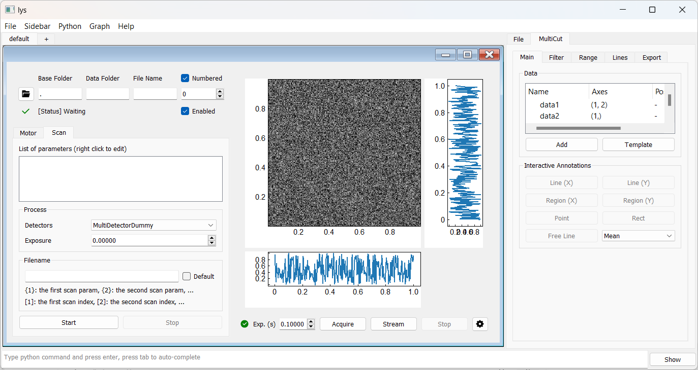
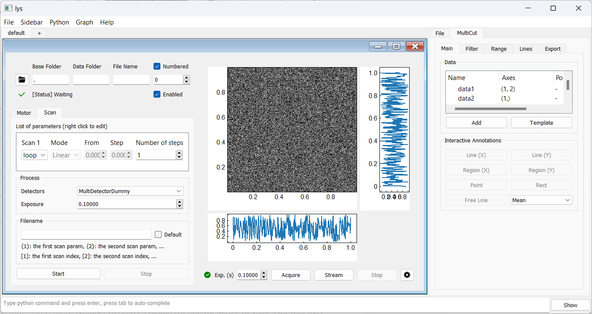
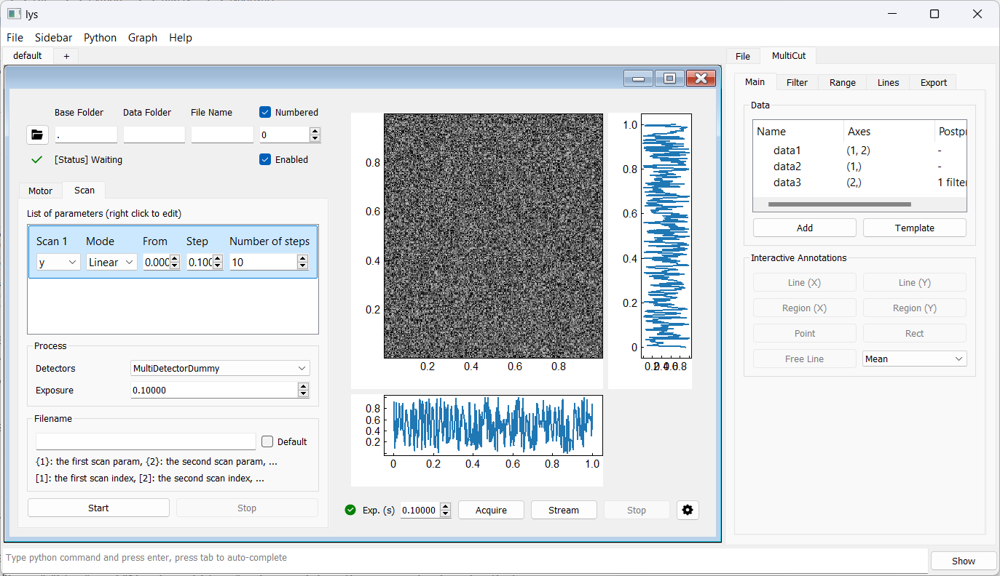
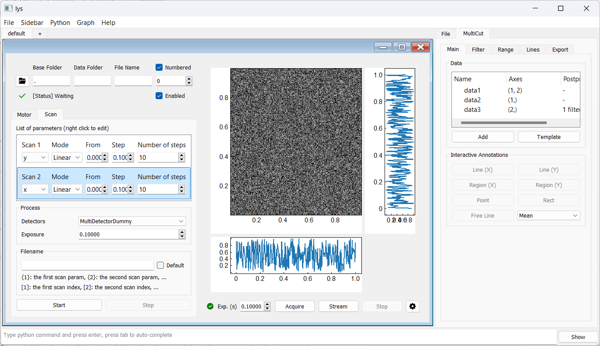
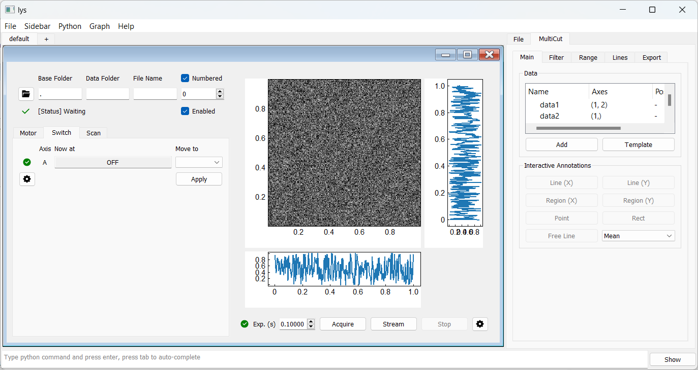
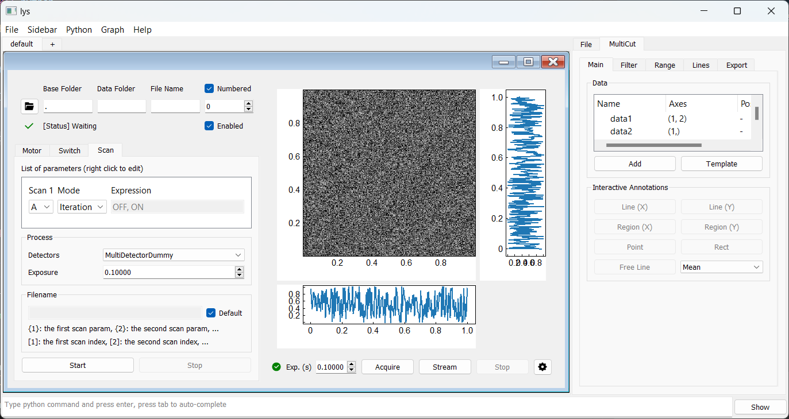

Scan GUI
Creating a Scan GUI
A “scan” coordinates multiple devices to repeatedly execute a sequence of operations while systematically varying one or more parameters. Typically, these parameters are controlled by motor(s), and the operation involves data acquisition by detector(s), as shown in the hands-on example.
Let’s take a closer look at how to set up a basic scan GUI using the dummy motor, dummy detector, and storage introduced earlier.
from lys.widgets import LysSubWindow
from lys.Qt import QtWidgets
from lys_instr import DataStorage, dummy, gui
class Window(LysSubWindow):
def __init__(self):
super().__init__()
self._motor = dummy.MultiMotorDummy("x", "y")
self._detector = dummy.MultiDetectorDummy(frameShape=(256, 256))
self._storage = DataStorage()
self._storage.connect(self._detector)
self._initLayout()
self.adjustSize()
def _initLayout(self):
_detectorGUI = gui.MultiDetectorGUI(self._detector)
_motorGUI = gui.MultiMotorGUI(self._motor)
_storageGUI = gui.DataStorageGUI(self._storage)
_scanGUI = gui.ScanWidget(self._storage, [self._motor], [], {"MultiDetectorDummy": self._detector})
self._tab = QtWidgets.QTabWidget()
self._tab.addTab(_motorGUI, "Motor")
self._tab.addTab(_scanGUI, "Scan")
VBox = QtWidgets.QVBoxLayout()
VBox.addWidget(_storageGUI)
VBox.addWidget(self._tab)
HBox = QtWidgets.QHBoxLayout()
HBox.addLayout(VBox)
HBox.addWidget(_detectorGUI)
w = QtWidgets.QWidget()
w.setLayout(HBox)
self.setWidget(w)
GUI Overview
Let’s first look at the GUI before diving into the code.
Add the above code to proc.py in lys and then call this Window() from the lys command line to launch the GUI subwindow as follows:

To configure the scan, open the Scan tab:
The “Process” box displays the base or lowest-level process, which by default is the detector’s acquisition process. (See the Advanced section for details on customizing the base process.) Here, the dummy detector is selected and we will set the exposure time to 0.1 second.
Scan loops are configured in the “List of parameters” box. Right-click the blank space and select “Add new scan” to add the first scan loop, which repeats the base process.
“Loop” in the first column indicates a pure repetition of the base process without varying any parameter. Then, only the “Number of Steps” needs to be defined. (The default “Loop” process is not the focus of this tutorial.)
To sweep a motor axis, select the desired axis in the first column.
In “Linear” mode, the “From”, “Step”, and “Number of Steps” columns define the range of values for that axis. For here, we choose the “y” axis for a linear scan from 0 with a step of 0.1 for 10 steps.
Alternatively, in “Free” mode, you can input a Python expression—such as a list of specific values, or a NumPy array like np.arange(0, 1, 0.1)—in the “Expression” field.
We can add a second scan loop that repeats the first scan loop by right-clicking the blank space again and selecting “Add new scan.” Similarly, we choose the “x” axis for a linear scan from 0 with a step of 0.1 for 10 steps.
This configuration performs a nested scan, acquiring data over a 10×10 2D grid by scanning the y-axis at each x-axis position.
By design, the “Numbered” checkbox in the Storage panel and the “Exp.” field in the Detector panel are automatically overridden when running a scan.
Code Overview
Let’s return to the code to see how the GUI is constructed.
The Window class inherits from LysSubWindow to create a subwindow in lys.
(We will not discuss further details of this class here; users can take it as a template for creating subwindows.)
The __init__ method instantiates the motor, detector, and storage, and connects the storage to the detector as explained earlier.
The _initLayout method, called within the __init__ creates the full GUI, including the Scan interface.
In the _initLayout, the individual GUI components for the detector, motor, and storage are created first, using their instances.
Recall that you should use your own device-specific instances in real applications (see the Advanced section for details on how to make interfaces to real instruments).
_detectorGUI = gui.MultiDetectorGUI(self._detector)
_motorGUI = gui.MultiMotorGUI(self._motor)
_storageGUI = gui.DataStorageGUI(self._storage)
Next, the scan GUI is created using the ScanWidget class.
This class takes the storage instance, a list of motor instances, a list of switch instances (empty for here; see the Advanced section for details on switches),
and a dictionary of detector instances ({name_of_your_Detector: your_detector_instance}) as arguments.
You can customize this line to include your own motor, switch, or detector instances as needed for your setup.
_scanGUI = gui.ScanWidget(self._storage, [self._motor], [], {"MultiDetectorDummy": self._detector})
Then, we create a tab widget (_tabWidget) to hold the motor and scan GUIs, adding _motorGUI and _scanGUI as tabs with appropriate labels (“Motors” and “Scan”).
_tabWidget = gui.TabWidget()
_tabWidget.addTab(_motorGUI, "Motors")
_tabWidget.addTab(_scanGUI, "Scan")
Finally, assembling the storage GUI, tab widget, and detector GUI using vertical and horizontal box layouts completes the GUI as shown above.
VBox = QtWidgets.QVBoxLayout()
VBox.addWidget(_storageGUI) # Storage GUI at the top left
VBox.addWidget(self._tab) # Tab widget (motor and scan) below storage GUI
HBox = QtWidgets.QHBoxLayout()
HBox.addLayout(VBox) # Storage and tab on the left
HBox.addWidget(_detectorGUI) # Detector GUI on the right
w = QtWidgets.QWidget()
w.setLayout(HBox)
self.setWidget(w)
The example above shows the minimal setup required to perform a scan.
Incorporating Switches into Scan
In some cases, you may want to include switches in a scan, for example, in pump-probe experiments.
Since a switch instance serves a similar role to a motor instance in a scan, you can simply add it by following the motor’s pattern:
For example, in the __init__:
self._switch = dummy.MultiSwitchDummy("A", levelNames=["OFF", "ON"])
Next, include the switch GUI in _initLayout before creating _scanGUI:
_switchGUI = gui.MultiSwitchGUI(self._switch)
Then, modify the _scanGUI creation line to include the switch instance:
_scanGUI = gui.ScanWidget(self._storage, [self._motor], [self._switch], {"MultiDetectorDummy": self._detector})
Finally, add the switch GUI as another tab in the tab widget, similar to the motor GUI:
self._tab.addTab(_switchGUI, "Switch")
The resultant GUI appears as follows:
To add a scan task for the switch, right-click the blank area in the Scan tab and select “Add new switch”. For example:
You can freely combine motor and switch scans in any configuration to suit your experiment.